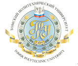

Tomsk State Polytechnic University [Introduction]: Tomsk Polytechnic University is located in Tomsk, the capital of Tomsk Oblast. It is the first science and engineering university in the Russian region and one of the top three major polytechnic universities in Russia. Founded in 1896, the Russian Ministry of Education's official website ranked seventh in the "Comprehensive University Rankings of Russian Universities" in 2012, and polytechnic...
Tomsk State Polytechnic University
[Introduction]: Tomsk Polytechnic University is located in Tomsk, the capital of Tomsk Oblast. It is the first polytechnic university in Asia and one of the top three polytechnic universities in Russia. Founded in 1896, the Russian Ministry of Education website ranked it seventh in the "Russian University Comprehensive Rankings" in 2012, with Polytechnic ranking second, and the Times ranked among the world's top 500.

School scale
Founded in 1896 and admitted students in 1900, Tomsk State Polytechnic University has a long tradition of training highly skilled engineers. Tomsk State Polytechnic University, founded in 1896, is one of the earliest outstanding higher education institutions, having trained 150,000 specialists, including over 500 academicians and recipients of the National Quality Medal. The university has 272 doctoral programs, training undergraduates in 111 specialties, master's students in 104 specialties, and doctoral students in 97 specialties. Tomsk Polytechnic University is the leading technical university in the Asian region of Russia, founded in 1896. It has trained more than 100,000 specialists, including over 300 academicians, as well as recipients of the Lenin Medal, State Prize, and other prestigious medals. With its long history and excellent rankings, and according to a decree signed by the President of the Russian Federation on April 2, 1997, Tomsk Polytechnic University was included in the "Compilation of Russian National Cultural Heritage of Special Value," reflecting Tomsk Polytechnic University's leading role and its influence on social culture. Tomsk Polytechnic University currently has 8 faculties, 10 departments, and 3 scientific research institutes, including the Institute of Nuclear Physics, the High Pressure Research Institute, and the Institute of Endoscopy. There are also the Novosibirsk New Technology Research Center, the most advanced and comprehensive scientific and technological library in all of Russia, an information analysis center, a university press, a university museum, a fitness center, a Russian-German center, a Russian-French center, an Asia-Pacific center, an international education activity center, and the Heriot-Watt University Oil Expert Training Center in the UK. Tomsk Polytechnic University was the first in Russia to establish a degree system consistent with those in Europe and the United States, enjoying high recognition there. Seven English-taught programs have been accredited by the American International Accreditation Center (GATE), the Canadian Engineering Accreditation Board (СЕАВ), and the Accreditation Board for Engineering and Technology (ABET) trust. The teaching quality management system has passed ISO 9001:2000 system certification (National Quality Assurance Ltd. (NQA), UK. Tomsk Polytechnic University
School Introduction
Tomsk Polytechnic University (formerly Tomsk Polytechnic Institute) is located in Tomsk and is a prestigious century-old institution founded during the reign of Nicholas II (1896). It is the first engineering institution east of the Ural Mountains in Russia, and was ranked among the three major engineering institutes during the Soviet era. It is the birthplace of engineering education in the Far East, and has established more than 20 higher education institutions based on Tomsk Polytechnic University. According to the authoritative ranking of the Russian Ministry of Education, it ranks third among 48 comprehensive technical universities in Russia. During the Soviet era, Tomsk served as an important military base and became a closed city isolated from the outside world. It only opened to the public in 1990. After decades of military isolation, this century-old university quickly went global and established friendly cooperative relationships with dozens of universities worldwide. In 1996, it was among the first batch of Russia's most valuable units of national cultural heritage approved by the President of the Russian Federation, with only eight universities in the Russian Federation receiving this honor. It was among the first to be recognized as Russia's most valuable units of national cultural heritage, and only eight universities among all Russian universities received this honor. Tomsk Polytechnic University was the first in Russia to establish a degree system consistent with those in Europe and the United States. By 1998, most majors had reached a level where courses could be taught in both English and Russian, and English instruction was accredited by the Russian Ministry of Higher Education. It was one of the first universities approved by the Russian Ministry of Higher Education to enroll and train foreign students.
Faculty strength
The university has 2,300 faculty and staff, including 2,000 faculty members, 230 PhDs, 1,050 associate doctors, 6 academicians of the Russian Academy of Sciences, 122 members of the Russian Academy of Public Professions and International Academy of Sciences, 2 recipients of national awards and 7 government awards, and 14 recipients of Russian Federation and international awards. Tomsk Polytechnic University actively introduces advanced international teaching experience and maintains close cooperative relationships with universities from the United States, United Kingdom, Germany, France, Japan, China, Cyprus, South Korea, India, and other countries. Chinese universities and the university's "2+2" learning programs Currently, Jilin University, Shenyang University of Technology, and Tsinghua University conduct intercollegiate "2+2" and other intercollegiate friendly cooperation projects. Every year, a large number of Chinese students go to Tomsk Polytechnic University to pursue bachelor's, master's, and doctoral degrees through intercollegiate joint training and other programs. Currently, there are more than 1,000 international students at our school, including more than 130 Chinese students.
English courses offered by the school
Tomsk Polytechnic University was the first in Russia to establish a degree system consistent with Europe and the United States. By 1998, most majors had reached a level where instruction could be conducted in both English and Russian, and English instruction was accredited by the Russian Ministry of Higher Education. In addition, the university offers eight fully English-taught programs: Electrical Engineering, Mechanical Engineering, Computer Science, Chemical Engineering, Environmental Protection, Management, Linguistics and Education, Linguistics and Translation, Physics, Geology and Geological Engineering, and Thermal Engineering.
Putin visits
In 2010, Putin and other officials visited Tomsk Polytechnic University in person, greeted Torry students, maintained close exchanges with them, and honored outstanding scientists such as national and world-class Nobel laureates. He listed Torry as one of the 15 Russian universities needing $15 billion in research funding.
University reputation
Torry is a top-tier university in Russia and even worldwide, the only university in Asia that can rival major European universities. Its academic accreditation meets European standards and meets the standards of world-class universities. It holds an unshakable status as one of Russia's three major polytechnic schools. The Physics Department features Russia's experimental nuclear reactor, has a history of one Nobel laureate, and has one active Nobel researcher; The Chemistry Department boasts Mendeleev's contributions and innovations; The Biology Department has one Nobel laureate researcher. These four Nobel laureates and four other top scientists have established Toly's significant position in the global university rankings.
Mendeleev's outstanding contributions
Mendeleev laid a solid foundation for the chemistry department at Tomsk Polytechnic University, and in the 1890s, he provided Tomsk Polytechnic with a wealth of materials, making outstanding contributions to the university.
A renowned scientist
Among the academy's first professors were the following renowned scientists: Academician Nima Kisnel of the Academy of Sciences, who developed methods for obtaining carbohydrates and is renowned in the scientific community for his method known for the Kiesnel method; Professor Yevi Bilong, who discovered the phenomenon of periodic repetition in Mendeleev's periodic table, and Mendeleev himself actively participated in the construction of the institute, especially the Faculty of Chemistry; Also those who worked at the Polytechnic Institute included Ba? P? Professor Wien Beilek – a renowned researcher in geomagnetism and founder of the Tomsk School of Solid State Physics. Academician Nisemenov completed his work in Professor Wien Bielek and later won the Nobel Prize in physical chemistry; Professors Teigikhonov, Nivigudovsky, and Nibechzhan Vsky achieved significant research in metallurgy, metallurgy, and metal physics; Academicians Viaoboluchov and Miausov established the powerful Siberian Mining Geology School, whose students later became renowned geologists such as Mik Korovin, who predicted Siberian oil industry deposits.
University Status
The university's majors in nuclear physics, computer and information, electronics, microelectronics, chemistry, chemical engineering, electrical engineering, geology, and economics and trade are among the strongest in Russia and even among CIS countries. Tomsk Polytechnic University's ranking confirms its high level: first in the Russian Association for Engineering Education and third in the Russian Association of Technical Universities. The university holds state-issued accreditations. Nine expert training syllabi have been accredited by the independent engineering accreditation center. The certification of the U.S. GATE (Global Alliance of Transnational Education) for the Major Polytechnic Institute and its five English-taught syllabi is the first in Russian history. Six departments of expert training quality management systems have been accredited by the NQA (United Kingdom of Great Britain and Northern Ireland) accreditation office. Tomsk Polytechnic University is among the first Russian universities in Russia to offer all-English instruction, providing comprehensive teaching to foreign students whose native language is not Russian. English teaching standards have met the certification of the Global Alliance for Transnational Education in the United States, and its teaching quality management system is included in the UK's National Quality Assurance. Tomsk Polytechnic University actively introduces advanced international teaching experience and maintains close cooperative relationships with universities from the United States, United Kingdom, Germany, France, Japan, China, Cyprus, South Korea, India, and other countries. The university library holds a total of 2.7 million books in various languages, including Russian, English, German, French, and Chinese. Today, the university library has a long-term reading capacity of over 23,000 people; 8 reading halls; The Intel Network Center, the university library today acquires over 10,000 new books and more than 400 various magazines. The university's School of International Education and Language Exchange ensures that international students learn Russian. International students can use computers at three computer network centers to search for information and browse international and domestic news. International students can choose any sports during PE classes, including basketball, volleyball, soccer, tennis, and more. Every year, sports competitions such as skiing, volleyball, and taekwondo are held on campus. On campus, there are also indoor swimming pools and saunas available for students. Winter football is very popular in Russia, and international students actively participate.
Scholarship for self-funded students at the university
To support the study and living expenses of self-funded students, the university offers Russian government scholarship programs for outstanding students. For example, outstanding self-funded students can receive a Russian scholarship of 50,000 RMB annually, which helps resolve many issues related to tuition and accommodation fees. At the same time, the university also offers a program for self-funded and publicly funded students to study in Germany, receiving 100,000 RMB in annual funding from the Russian Ministry of Education.
托木斯克国立理工大学
【导读】：托木斯克理工大学位于托木斯克州首府托木斯克。它是俄罗斯亚洲地区第一所理工类大学，也是俄罗斯最顶尖的三大理工大学之一。创建于1896年，俄罗斯教育部官网2012年公布“俄罗斯大学综合排名中位于第七” ，理工排名第二，在英国泰晤士报中，进入世界前500强。
办学规模
创建于1896年，1900年收生开课，在培养高技能型工程师方面有悠久的传统。托木斯克国立理工大学建于1896年是最早优秀的高等学府之一，已经培养出了15万名各类专家，其中500多名院士、国家优质奖章获得者。大学内有272个博士站，培养111个专业方向的本科及104专业方向的硕士、97个专业方向的博士。托木斯克理工大学是俄罗斯亚洲区的第一技术类大学，创建于1896年。这里共培养了十多万名专家，其中有三百多名院士，还有列宁奖章、国家奖金和其他高声誉奖章的得主。凭着悠久的历史和优秀的排名，根据俄罗斯联邦总统1997年4月2日签署的命令，托木斯克理工大学被列入“俄罗斯有特殊价值的民族文化遗产汇编”，这是托木斯克理工大学的主导作用及其对社会文化的影响的体现。托木斯克理工大学目前有8个学院、10个系、3个科学研究所包括核物理研究所、高压研究所、内视学研究所。还有新西伯利亚新工艺技术研究中心、全俄罗斯最先进最全面的科技图书馆，信息分析中心、大学出版社、大学博物馆、运动健身中心、俄德中心、俄法中心、亚太中心、国际教育活动中心、英国Heriot-Watt大学石油专家培训中心。托木斯克理工大学在俄罗斯率先建立了与欧, 美相一致的学位体制在欧美有较高的认可度. 七个用英语授课的专业已经通过美国国际认证中心 (GATE)的鉴定, Canadian Engineering Accreditation Board (СЕАВ), Accreditation Board for Engineering and Technology (ABET) 的信托.教学质量管理系统通过了 ISO 9001:2000 体系认证(National Quality Assurance Ltd. (NQA), UK. 托木斯克理工大学
学校简介
俄罗斯托木斯克理工大学(原名托木斯克工学院)位于托木斯克市，是一所享有盛名的百年老校，始建于尼古拉二世时期(1896年)，是俄罗斯乌拉尔山以东地区的第一所工科院校，在苏联时期即名列三大工学院之一，是远东地区工学教育的发源地，在托木斯克理工大学的基础上先后分离和建立了20余所高等院校。据俄罗斯教育部的权威排名，在全俄48所综合性技术大学中名列第三。苏联时期，托木斯克作为重要的军事基地成为封闭城而与世隔绝，1990年才开始对外开放，这座百年老校在军事封闭几十年后迅速走向世界，先后与世界各国几十所大学建立了友好合作关系。1996年经俄联邦总统批准首批成为俄罗斯最有价值的民族文化遗产单位，俄罗斯联邦所有高校中仅有八所高校获此殊荣。首批成为俄罗斯最有价值的民族文化遗产单位，俄罗斯联邦所有高校中仅有八所高校获此殊荣。托木斯克理工大学在俄罗斯率先建立了与欧、美相一致的学位体制，1998年大部分专业得到了可同时用英、俄两种语言授课的水平，英语授课得到了俄罗斯联邦高教部认证。是俄罗斯高教部首批获准可以招收培养外国留学生的高校之一。
师资力量
大学内教职员工2300名，其中包括2000名大学教师、230名博士、1050名副博士、6位俄罗斯科学院院士、122位俄罗斯公共职业科学院及国际科学院成员，2名国家级奖项获得者和7位政府奖项获得者，14位获得俄罗斯联邦及国际奖项获得者。托木斯克理工大学积极的引进国际先进教学经验，大学积极的同来自于美国、英国、德国、法国、日本、中国、塞浦路斯、韩国、印度等国的大学进行着紧密地合作关系。中国大学与该校的“2+2”学习项目目前吉林大学，沈阳理工大学，清华大学跟该校进行“2+2”等校际友好合作项目，每年有大批中国学生通过校际联合培养等模式前往托木斯克理工大学攻读学士，硕士和博士学位。目前在本校的外国学生有1000多名，其中中国学生130多名。
学校开设的英文课程
托木斯克理工大学在俄罗斯率先建立了与欧、美相一致的学位体制，1998年大部分专业得到了可同时用英、俄两种语言授课的水平，英语授课得到了俄罗斯联邦高教部认证。除此之外，大学内还开设了全英文授课的八门专业课程：包括：Electrical Engineering, Mechanical Engineering, Computer Science, Chemical Engineering, Environmental Protection, Management, Linguistics and Education, Linguistics and Translation，Physics, Geology and Geological Engineering, Thermal Engineering.
普京来访
2010年，普京与众官员来到托木斯克理工大学亲临托理工，慰问托理学生，与学生密切交流，慰问学校国家级与世界级诺贝尔等杰出科学家，并将托理列为俄罗斯15所大学需要拨款150亿美金研究经费的高校之一。
大学声誉
托理是俄罗斯乃至世界的超一流大学，是俄罗斯亚洲地区唯一一所可以与欧洲各大高校媲美的学校，学历认证达到了欧洲标准，达到了世界超一流大学的标准。它拥有着俄罗斯3大理工学校之一的无可捍卫的地位，物理系拥有着俄罗斯实验核反应堆，拥有1位诺贝尔获得者的建系历史，1位诺贝尔现役研究人员;化学系拥有门捷列夫的贡献与创造;生物系拥有1位诺贝尔获得者研究人员。这4位诺贝尔奖获得者等4位世界最高科学家人员们，奠定了托理在世界大学排名具足轻重的地位。
门捷列夫的杰出贡献
门捷列夫为托木斯克理工大学的化学系奠定了坚实的基础，同时在19世纪90年代为托木斯克理工提供了大量的资料，为托木斯克理工大学做出了杰出的贡献。
知名科学家
学院的第一批教授中有以下知名的科学家：研制获取碳水化合物获取方法的科学院院士尼马基士聂尔,其方法以基士聂尔法闻名于科学界;叶维毕隆教授,发现了门捷列夫元素周期表周期性重复现象，而门捷列夫本人则积极参与了学院的建设,尤其是化学部的建设;曾在托理工工作过的还有巴?普?维依恩别勒克教授-地磁学的知名研究家暨托木斯克固体物理学学派的奠基人。院士尼谢苗诺夫在维依恩别勒克教授的实验室中完成了自己的工作,并在后来获得了物理化学领域的诺贝尔奖;特伊吉洪诺夫教授,尼维古多夫斯基教授和尼别契然夫斯基教授在金属学、冶金学和金属物理方面获得了具有重大价值的研究成果; 维阿奥博卢乔夫院士和米阿乌索夫院士建立了实力雄厚的西伯利亚地区矿山地质学学派,他们的学生后来成为了著名的地质学家,如:米克科罗维恩,曾预测出西伯利亚石油工业矿床。
大学状况
大学的核物理、计算机与信息、电子、微电子、化学、化工、电机、地质学、经贸等专业都是全俄罗斯甚至独联体国家当中最强劲的专业。托木斯克理工大学的排名证实了它的高水平：在俄罗斯工程教育协会中排名第一，在俄罗斯技术类大学协会中排名第三。大学有国家颁发的认证书。9个专家培训教学大纲通过了工程专业独立认证中心的认证。托理工及其5个英语授课的教学大纲通过的美国GATE(Global Alliance fof Transnational Education)的认证,是俄罗斯有史以来的第一次。有六个部门的专家培训质量管理体系通过了NQA(大不列颠及北爱尔兰联合王国)认证办事处的认证。托木斯克理工大学作为目前俄罗斯第一批可以用全英文授课的俄罗斯高校针对母语为非俄语的海外学生进行全方位的教学。英文教学水平已经符合了美国 Global Alliance for Transnational Education 的认证, 同时其教学质量管理体系已经列入英国 National Quality Assurance。托木斯克理工大学积极的引进国际先进教学经验，大学积极的同来自于美国、英国、德国、法国、日本、中国、塞浦路斯、韩国、印度等国的大学进行着紧密地合作关系。大学图书馆藏有各种语言，包括俄语、英语、德语、法语、汉语书合计270万册。 如今大学图书馆：长期阅览人数超过23000人;8处阅览大厅;因特尔网络中心，大学图书馆今天获取10000多新书以及400多本各类杂志。大学国际教育与语言交流学院确保海外留学生学会俄语。海外留学生可以去三处计算机网络中心使用计算机上网查询信息及浏览国际国内新闻。海外留学生在上体育课的时候可以任何选择运动项目，包括篮球、排球、足球、网球等体育项目。大学内每年举行滑雪、排球、跆拳道等体育竞赛。在大学校园内的学生公寓区内还有室内游泳馆、桑拿浴等供学生使用。在俄罗斯非常盛行“冬季足球”，海外留学生都很积极的参与当中。
学校自费生奖学金
学校为了资助自费生的学习与生活，学校可以为优秀自费学生提供俄政府奖学金资助项目，如自费生成绩优秀，每年可获得俄罗斯奖学金5万人民币，解除了许多自费学生的学费与住宿费等问题。与此同时，该校还为自费学生与公费学生提供赴德国公费生项目，每年可获得10万人民币的俄教育部资助。
English edition. Select 中文原文 to compare with the original Chinese article.
This article is edited and published by Liaoning Overseas Study Service Co., Ltd. The content is for study abroad planning reference only. Unauthorized reproduction is prohibited.
Information on policies, regulations, admissions brochures, and program fees is timely. Please refer to the latest releases from official institutions and institutions in various countries; For detailed verification, please Contact an advisor。